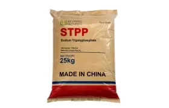

Sodium Tripolyphosphate (STPP)
CAS: 7758-29-4
Food-grade STPP for moisture management and texture in meat and seafood processing. Compare the specification with your formulation and market requirements.
Meat Processing Seafood Processing Food Phosphates View product